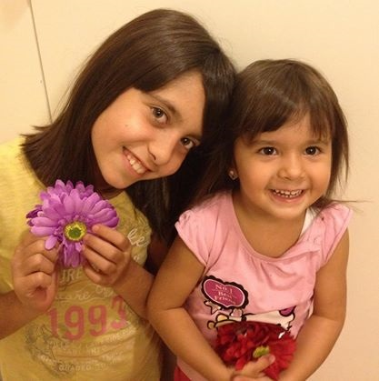

Char Dimitris;
Mitt namn är Dimitris och jag är 33 år gammal. Jag bor i Västervik, är gift och har två underbara döttrar. Min äldsta dotter är 10 år och den yngste är nästan 3 år gammal.
Egenskaper och Intressen
Jag gillar inte att prata, skryta om mig själv, men eftersom jag måste… Vad är jag bra på? Den är ganska svår fråga att svara på! Jag är bra på att laga mat, på matematik(inte avancerad), på att skriva texter, m.m. Helt generellt, jag brukar bli bra på det mesta jag gör, eftersom det antingen är passionen som driver mig eller ansvaret. Någon egen talang har jag inte upptäckt än! De andra ser några men jag tror att de syftar åt komplimanger.
Vad är jag inte bra på? Sådana saker som jag måste göra och som de inte intresserar mig samt finns inga konsekvenser som följer, eller personligt ansvar.
När det gäller intressen, så älskar jag att:
- Umgås med min familj
- Att läsa:
- någon intressant text/artikel på internet
- Att titta på:
- film, älskade serier och fotboll
är verkligen det jag gör på min fritid.
Utbildning och Arbetslivserfarenheter
Ett stort felaktigt beslut som jag har tagit i mitt liv, var att välja följa en rörmokare – utbildning i Grekland. Utbildningen har get mig såklart visa kunskaper och erfarenheter men den ledde mig också i fel väg…
...Jag flyttade på grund av kärlek till Sverige i juni 2003. Och som vanligt, när man flyttar till ett nytt land utan några språkkunskaper, når man en stor tillbakagång. Efter många år och ”instängd” i restaurangbranschen märkte jag att min personliga utveckling gick väldigt segt. Samt min framtid såg väldigt sudigt ut. Så jag bestämde mig för en total förändring! Jag skrev mig in i Komvux i Västervik för att lära mig bättre svenska och det resulterade med till att jag fick gymnasiets slutbetyg. Såklart ville jag inte stanna där! Så jag kollade efter högskolutbildningar…
När det gäller arbetslivserfarenheter finns det faktiskt mycket att säga men jag ska vara kortfattat med en lista i kronologiskt ordning:
Arbete i Grekland:
- Servitör på en restaurang vid 14 årsåldern.
- Servitör och barman på ett kafé.
- Rörmokare – som lärling.
- Järnrörsmålare på det nya sjukhuset i min ort.
- Bygg arbetare – på pappas arbetsplats.
- Jobb på en möbelaffär.
- Jobb på landet (trädbeskärning;).
Arbete i Sverige (2003):
- Jobb på en restaurang i Kisa:
- Diskare - köket
- Pizzabagare – kok i samma restaurang.
- 2006 köpte (jag samt min fru) och sedan sålde vi samma restaurang (2008).Flyttade till Västervik för att kunna ändra bransch men tyvärr.
- Deltidsjobb som pizzabagare och kok på en restaurang fram till 2010, men jag har sommarjobbat ditt fram tills idag.
Webbprogrammerareutbildning
… Det var en kall och mörk eftermiddag någon gång i mitten av december
förra året. Den kalla vinden härjade på gåtan och inget levande varelse var
tillräkligt modig att möta den. Där log jag, ensam på min soffa, i min
mörka och kalla lägenhet och bläddrade i youtube. När helt plötsligt… mina
ögon träffade en video med titel: ”Create your own web page in 5 minutes
with wordpress”. Inom tre veckor kollade jag på tusentals video och läste
hundratals artiklar om wordpress och ”how to create your own web page”. I
början av januari köpte jag två domain, ordnade ett webbhotell och skaffade
två webbsidor. Men det räckte och räcker inte! Jag ville och vill ha mer!
Vid 33års åldern har jag märkt att det inget finns som kan ger mig mer tillfredställelse än att skapa något från intet. Att skapa något vackert, något användbart från en råvara eller intet (den digitala världen) gör mig väldigt lycklig. Samt får man inte glömma att det är passionen som driven en fram till slutet och perfektionen. Ingen plikt eller ansvar!
När det var dags för att söka vidare utbildning fastnade mina ögon direkt på webbprogrammerareutbildningen. (Kan inte heller flytta eller läsa i en längre ort på grund av familjen). Det blev mitt första val och andra blev ekonomiutbildning på distans, något som jag faktiskt inte gillar mycket.
Jag har aldrig programmerat innan! Det är det som gör att jag inte vet verkligen hur min framtid kommer att se ut, eftersom jag inte är säker om jag kommer att klara utbildningen (C#). Jag hoppas på att, om två år, kommer jag att vara en lycklig webbprogrammerare!